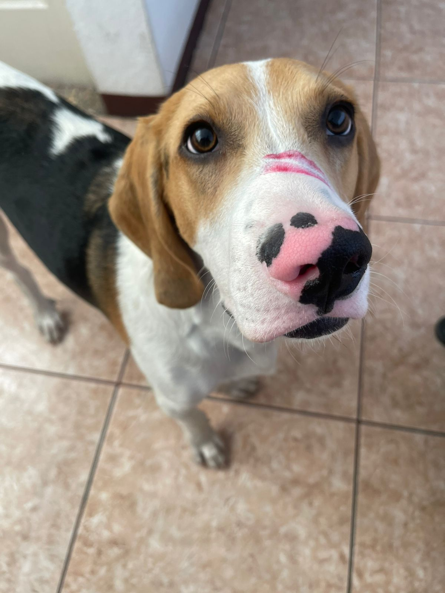
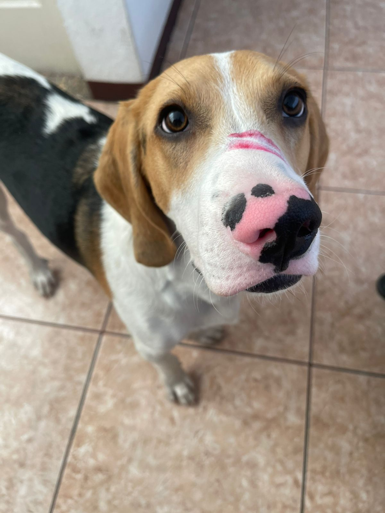
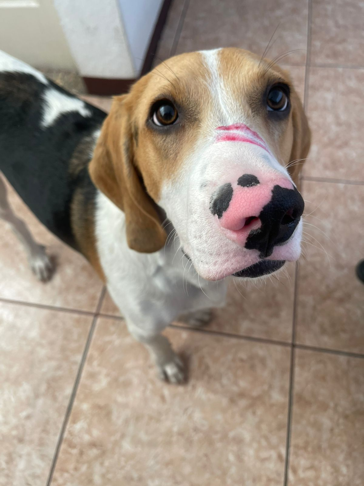

En este caso te da las características de los invitados faltantes, te sorprendes al escuchar que son animales, específicamente tres canes. Luego de un rato de estar divagando por los bosques del País de las Maravillas los encuentras jugando. Vuelves con ellos a la mesa de té. Todos te agradecen, para luego decir "Todo está conectado".
